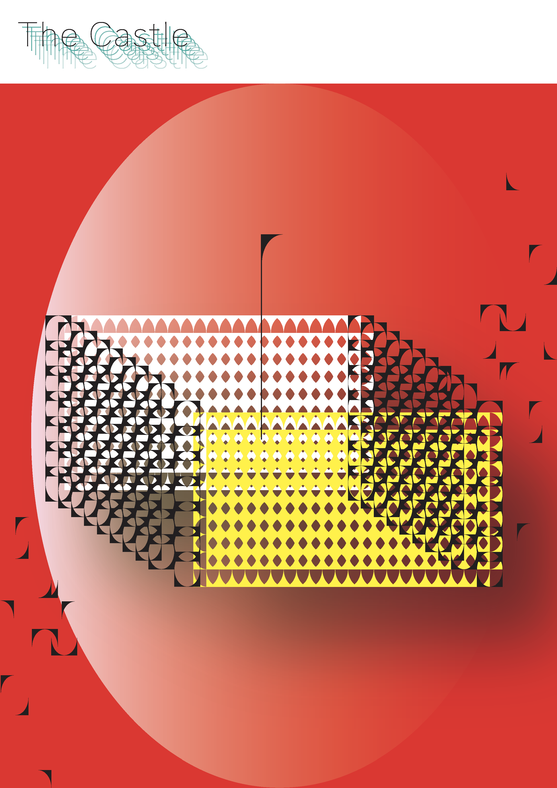
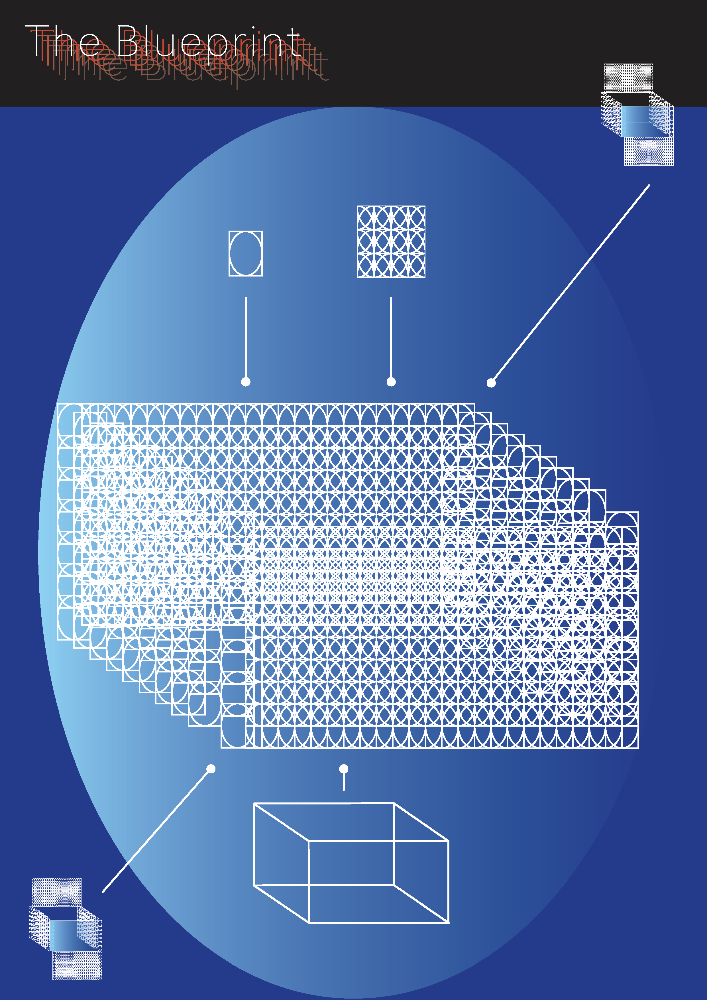
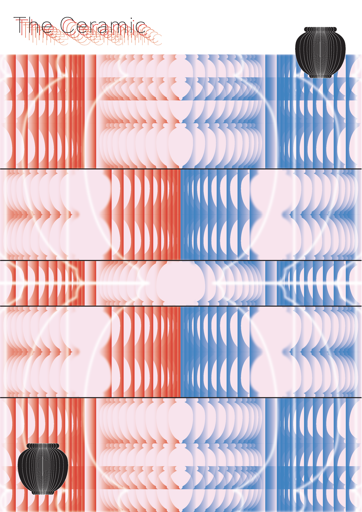

정서윤
SEO YOON JUNG
×
<
>
5 PATTERN POSTERS
VD2
  
나와 성격이 비슷한 오브젝트-날계란, 인형의 집, 청사진, 도자기, 공책-의 속성에 주목하여 5개의 패턴 포스터를 제작하였다.
SELF IDENTITY
VD2
Gardian Angel
우리를 보호하고, 때로는 성격을 표현하는 옷을 인형에게 입혀 가지고 놀 수 있는 ‘인형 옷 입히기’ 제작 브랜드. 자신과 가장 알맞은 인형을 만들어 자신의 감정을 인형에게 투영할 수 있다.